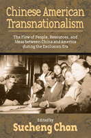

<body bgcolor="#FFFFFF" text="#000000" link="#0000FF" vlink="#CC0000" alink="#CC0000"><center><hr width="350" size="1" align="center" noshade>The third volume in a trilogy that offers the most comprehensive account to date of the Chinese American experience during the exclusion era<hr width="350" size="1" align="center" noshade><p><a href="https://cdcshoppingcart.uchicago.edu/Cart/ChicagoBook.aspx?ISBN=9781592134342&&PRESS=temple" target="_top">Buy this book!</a> | <a href="https://cdcshoppingcart.uchicago.edu/Cart/Cart.aspx?PRESS=temple" target="_top">View Cart</a> | <a href="https://cdcshoppingcart.uchicago.edu/Cart/Cart.aspx?PRESS=temple" target="_top">Check Out</a></p><p></p></center><!--none//--><h1>Chinese American Transnationalism</h1>
<H2>The Flow of People, Resources, and Ideas between China and America during the Exclusion Era</H2>
<h3>edited by Sucheng Chan</h3>
<P>cloth 1-59213-434-3 $80.50, Nov 05, <FONT COLOR=#990033>Available</FONT>
<br>paper 1-59213-435-1 $30.95, Nov 05, <FONT COLOR=#990033>Available</FONT>
<br>Electronic Book 1-59213-448-3 $30.95 <FONT COLOR=#990033>Available</FONT>
<BR> 312 pp
6x9
38&nbsp;tables 1&nbsp;halftone
</P><BLOCKQUOTE><I>"These essays by leading scholars of Chinese American history are full of new information and important insights. </i>Chinese American Transnationalism<i> leads us away from simplistic binaries towards a more nuanced and subtle understanding of the complex connections that Chinese Americans maintained between home and homeland."</i>
<br>&#151<b>Robert G. Lee</b>, Associate Professor of American Civilization, Brown University, and author of <i>Orientals</i> (Temple)<i></I></BLOCKQUOTE>
<p><i>Chinese American Transnationalism</i> considers the many ways in which Chinese living in the United States during the exclusion era maintained ties with China through a constant interchange of people and economic resources, as well as political and cultural ideas. This book continues the exploration of the exclusion era begun in two previous volumes: <i>Entry Denied</i>, which examines the strategies that Chinese Americans used to protest, undermine, and circumvent the exclusion laws; and <i>Claiming America</i>, which traces the development of Chinese American ethnic identities. Taken together, the three volumes underscore the complexities of the Chinese immigrant experience and the ways in which its contexts changed over the sixty-one year period.
<BR>&nbsp;<h2>Excerpt</h2><P>Excerpt available at <a href="http://www.temple.edu/tempress">www.temple.edu/tempress</a></p>
<BR>&nbsp;<h2>Reviews</h2>
<p><i>"</i>Chinese American Transnationalism<i> contains fresh and original contributions, highlighting the long history of transnationalism in Chinese American history. Though Chinese exclusion laws tried to curb Chinese immigration to the United States, the authors of this excellent volume demonstrate that people, ideas, cultural and political practices, and economic resources continued to migrate back and forth across the Pacific. Despite significant legal obstacles, Chinese Americans created vibrant communities with complex ties to both China and the United States."</i>
<br>&#151<b>Lucy E. Salyer</b>, University of New Hampshire
<p><i>"</i>Chinese American Transnationalism<i> flows particularly well from Chan's last volume, </i>Claiming America<i>. Her introduction is gracefully written and does an impressive job of tying together the chapters in the anthology, showing how each connects in a different way with the general theme of Chinese immigrants' desire to maintain cultural and material ties with their country of origin. There is something interesting and valuable to be learned from every one of the individual essays, and together, they throw significant new light on the experience of the Chinese American community during the exclusion era."</i>
<br>&#151<b>Charles McClain</b>, Jurisprudence and Social Policy Program, School of Law, University of California, Berkeley
<p><i>"This invigorating anthology completes a trilogy...[the] rich approaches underscore how this era of limitation and prejudice also witnessed significant resistance, creativity, and Chinese growth across national boundaries. Recommended."</i>
<br>&#151;<b><i>Choice</i></b>
<p>"Chinese American Transnationalism<i> thus brings together in one volume exemplary work based on multilingual sources, methodological rigor, and conceptual innovation. It sets a very high bar for a trend that risks slipping into academic faddism.</i>"
<br>&#151;<b><i>The Journal of American History.</i></b>
<p><i>"Taken together, these essays offer a concise and worthwhile introduction to the state of the field in Chinese American social history."</i>
<br>&#151;<b><i>Western Historical Quarterly</i></b>
<p><i>"Immigrant experience is no longer a one-way street to the Promised Land but a multifaceted process that involves migration, return migration and re-migration. </i>Chinese American Transnationalism<i> serves as a model example of this new scholarship�. Chan should be commended for continuing to produce solid scholarship in Asian American history. For this particular volume, I would certainly concur with her statement, �If faculty teaching Chinese American or, more broadly, Asian American [history] can choose only one book about the exclusion era to assign in their classes, this book is it.� (p. x)."</i><br>&#151;<b><i>Pacific Historical Review</i></b>
<BR>&nbsp;<P><p>&nbsp;&nbsp;<font color="#3152A5">Also available in e-book</font></p></P><BR>&nbsp;<br>
<h2>Contents</h2><P>
<p>Preface and Acknowledgments
<br>1. Defying Exclusion: Chinese Immigrants and Their Strategies During the Exclusion Era &#150 Erika Lee
<br>2. Trading with Gold Mountain: <i>Jinshanzhuang</i> and Networks of Kinship and Native Place &#150 Madeline Hsu
<br>3. Against All Odds: Chinese Female Migration and Family Formation on American Soil During the Early Twentieth Century &#150 Sucheng Chan
<br>4. Chinese Herbalists in the United States &#150 Haiming Liu
<br>5. Understanding Chinese American Transnationalism During the Early Twentieth Century: An Economic Perspective &#150 Yong Chen
<br>6. Republicanism, Confucianism, Christianity, and Capitalism in American Chinese Ideology &#150 Shehong Chen
<br>7. Teaching Chinese Americans to be Chinese: Curriculum, Teachers, and Textbooks in Chinese Schools in America During the Exclusion Era &#150 Him Mark Lai
<br>8. Writing a Place in American Life: The Sensibilities of American-born Chinese as Reflected in Life Stories from the Exclusion Era &#150 Xiao-huang Yin
<br>Notes
<br>About the Contributors
<br>Index
</P><BR>&nbsp;<H2>About the Author(s)</H2>
<P><b>Sucheng Chan</b> is Professor Emerita of Asian American Studies and Global Studies at the University of California, Santa Barbara, and founding editor of the <i><a href="../asam_history.html" target="_top">Asian American History and Culture</a></i> series. She is the author or editor of numerous books, including three with Temple: <i><a href="811_reg.html" TARGET="_top">Entry Denied</a></i>, <i><a href="1332_reg.html" TARGET="_top">Claiming America</a></i>, and <i><a href="1053_reg.html" TARGET="_top">Hmong Means Free</a></i>.</P>
<BR><H2>Subject Categories</H2>
<p><A HREF="/tempress/asian_amer.html" TARGET="_top">Asian American Studies</a>
<BR><A HREF="/tempress/history.html" TARGET="_top">History</a>
<BR><A HREF="/tempress/american.html" TARGET="_top">American Studies</a>
</p>
<BR><h2 class="inpageheading">In the series</H2>
<P><I><a href="http://www.temple.edu/tempress/asam_history.html" onMouseOver="window.status='Click for other books in this series!'; return true;" onMouseOut="window.status=''; return true;" target="_top">Asian American History and Culture</a></i>, edited by K. Scott Wong, Linda Trinh V�, and Cathy Schlund-Vials.
</p><p>Founded by Sucheng Chan in 1991, the <I>Asian American History and Culture</I>, series has sponsored innovative scholarship that has redefined, expanded, and advanced the field of Asian American studies while strengthening its links to related areas of scholarly inquiry and engaged critique. Like the field from which it emerged, the series remains rooted in the social sciences and humanities, encompassing multiple regions, formations, communities, and identities. Extending the vision of founding editor Sucheng Chan and emeriti editor Michael Omi and David Palumbo-Liu, series editors K. Scott Wong, Linda Trinh V�, and Cathy Schlund-Vials continue to develop a foundational collection that embodies a range of theoretical and methodological approaches to Asian American studies.</p>
<p align="center"><a href="https://cdcshoppingcart.uchicago.edu/Cart/ChicagoBook.aspx?ISBN=9781592134342&&PRESS=temple" target="_top">Buy this book!</a> | <a href="https://cdcshoppingcart.uchicago.edu/Cart/Cart.aspx?PRESS=temple" target="_top">View Cart</a> | <a href="https://cdcshoppingcart.uchicago.edu/Cart/Cart.aspx?PRESS=temple" target="_top">Check Out</a></p><p><font face="Arial" size="1"><a href="copyright.html" onMouseOver="window.status='Web Copyright Policy';return true;" onMouseOut="window.status=''" title="Web Copyright Policy">&copy;</a> 2015 <a href="http://www.temple.edu" target="new" onMouseOver="window.status='Link to Temple University home page';return true;" onMouseOut="window.status=''" title="Link to Temple University home page">Temple University</a>. All Rights Reserved. http://www.temple.edu/tempress/titles/1824_reg.html</font></p>